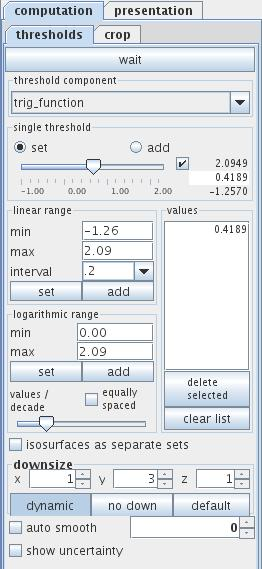
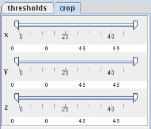
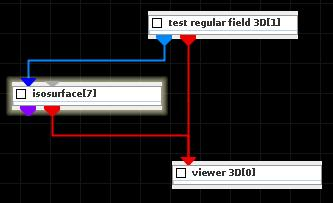
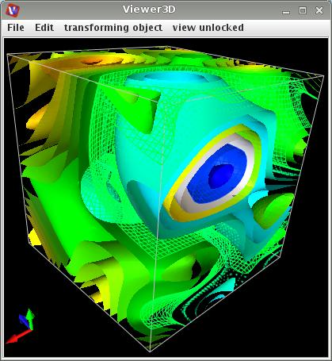

ISOSURFACE
An isosurface is a form of visualization for volume datasets, it represents points of a constant value in a 3D space.
Input data
At input the module requires either a regular 3D 3-space field with at least one scalar component or an irregular 3-space field with at least one scalar component and at least one cellset containing 3D cells.
Optionally the module has an input port for an isolevel float value.
Output data
At output the module delivers a surface field as an irregular 3-space field and a geometry object.
Computation tab
Thresholds

If wait button is on the module does not process data. Processing is continued if the button is set off. This possibility is useful for adjusting of parameters for big datasets.
Threshold component drop down list defines the component of the input field which is to be presented. By default, the first component of the list is used. For vector fields its norm is calculated.
The single threshold slider enables the user to choose the isosurface value. If checkbox on the right hand side of the slider is on, the user may adjust range and value entering the values in text fields.
A radio button menu allows values to be set and add. If set is on the slider works as in the simple GUI, i.e. a single slider value determines the value of the one isosurface. If add is on, every further slider value defines an additional isosurface associated with the value. By default the set modus is on.
In the linear range field the user can choose a set of evenly spaced isosurface values between the min and max value and a user defined interval. Press the set button in order to generate a new set of values, press the add button in order to add new values.
Similarily, in the logarithmic range field the user chooses isosurface values which are logarithmically spaced with values between min and max value.
The values/decade slider determines the number of isosurfaces.
If the equally spaced check box is on isosurfaces in each decade are equallly spaced.
In the values field all generated isosurface values are listed in a text field. Below the field the delete selected button allows to delete selected values from the list. Select the value by mouse clicking at the value, in order to choose more than one value mouse click with ctrl/shift. The clear list button deletes all but one value from the list.
If isosurface as separate sets check box is on every isosurface comes as a separate cell set at output. By default this option is off.
For big data sets data are downsized by default.
The downsize scaling factors can be adjusted using the downsize spinners. It reduces the size of the field, saving processing time and memory by "thinning out" the data. Default downsize values depend on the dimensions of the input field and are chosen automatically.
The default downsize button downsizes input data, the no down button reverses downsize. If dynamic button is pressed output is generated every time the downsize parameter changes.
The auto smooth option allows to smooth isosurfaces by a rate choosen on the right hand side of the auto smooth check box.
Switch on the show uncertainty check box to see problems with auto smoothing ???
Crop

The data volume crop sliders select the geometric extents of the regular input field, i.e. lower and upper bound array indices in their respective dimensions.
Presentation tab
Presentation tab contents are described in the common interfaces section unter the Presentation Panel entry.
Example

Choose test regular field 3D module from test objects library and isosurface module from 3D field mappers library and connect them.
If not already choosen press the show expert GUI button.
In the computation tab of the isosurface module choose for threshold component trig_function.
In the linear range field choose min value -1.26, max value 2.09, interval value 0.2. Switch the isosurface as separate sets check box on. Press the set button in the linear range field.
In the presentation tab there appears a list of isosurface cell sets. Choosing a set the user can change its properties. Each cell set can have its own different presentation.
